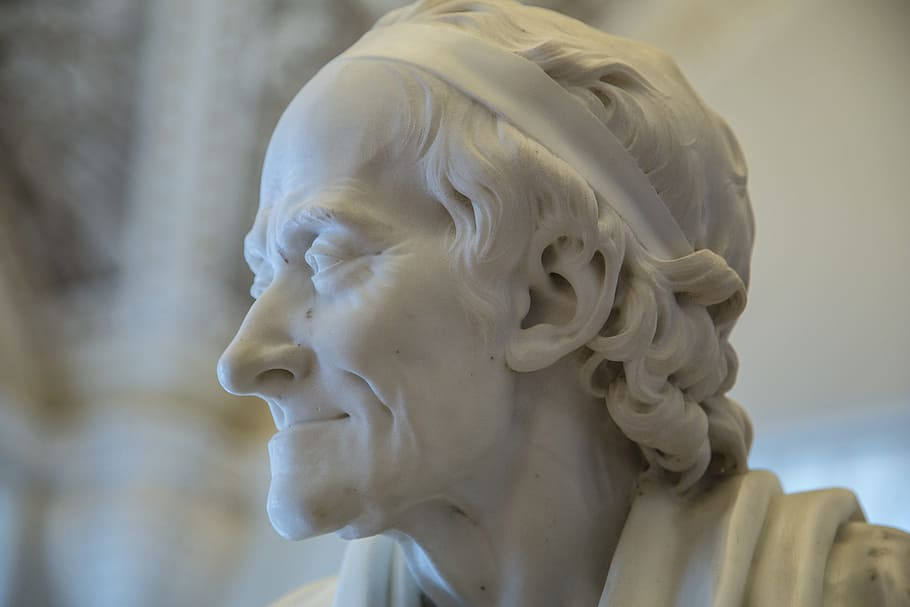

This bust, from the Stroganov collection in Saint Petersburg,
presumably was acquired by Count Alexander Sergeevitch Stroganov directly from Houdon during his years in Paris, 1770 to 1779.
A Voltaire Chronology
- 1694: Birth of Voltaire, his given name is François-Marie Arouet.
- 1704: Voltaire enters the Jesuit school Louis-le-Grand in Paris.
- 1713: Voltaire sent to Holland as secretary to the French ambassador.
- 1715: Death of Louis XIV.
- 1717: Voltaire is imprisoned in the Bastille for 11 months.
- 1718: Voltaire's first theatrical success is a tragedy on the Oedipus theme.
- 1723: He publishes the first edition de La Henriade, an epic poem dealing with the 16th-century Wars of Religion in France and the coming to power of Henry IV.
- 1726: Beaten by order of the chevalier de Rohan, he is again imprisoned in the Bastille, and then exiled to England.
- 1728: Voltaire returns to France.
- 1731: Publication of the History of Charles XII (the Swedish monarch).
- 1732: Triumph of Zaïre, a tragedy set against the backdrop of the Crusades.
- 1734: Publication of the Philosophical Letters. Under threat of arrest, Voltaire takes refuge at Cirey, in the Champagne region, at the home of his lover Mme du Châtelet.
- 1735-1739: In Cirey. Publication of Elements of the philosophy of Newton.
- 1740: Coronation of Frederick II, King of Prussia. Voltaire meets with Frederick II in Clèves.
- 1741: War of Austrian Succession.
- 1745: Louis XV wins the battle of Fontenoy and takes Mme de Pompadour as his mistress. Voltaire named Royal Historiographer.
- 1746: Election to the French Academy.
- 1747: Voltaire falls from favor at the court. Publication of the philosophical tale, Zadig.
- 1748: Frequents the court of Stanislas, father-in-law of Louis XV, in Lorraine. Peace Treaty of Aix-la-Chapelle.
- 1749: Death of Mme du Châtelet.
- 1750: Voltaire moves to Berlin to join the court of Frederick II of Prussia. Rousseau publishes his Discourse on the Sciences and the Arts.
- 1751: Publication of volume I of Diderot and d'Alembert's Encyclopédie. Voltaire publishes The Age of Louis XIV.
- 1753: Voltaire breaks with Frederick II. Louis XV forbids him access to Paris; he stays temporarily in Alsace.
- 1753: Establishes residence at "Les Délices," outside Geneva. Rousseau publishes his Discourse on the Origins of Inequality.
- 1756: Voltaire collaborates on the Encyclopédie; d'Alembert (author of the article "Optimism") visits Voltaire at "Les Délices." Beginning of the Seven Years War.
- 1757: Disastrous defeat of the French army at Rossbach. Persecution of the philosophes: publication of the Encyclopédie is interrupted.
- 1758: Voltaire buys Ferney, a French château near the Swiss border.
- 1759: Publication of Candide.
- 1762: Beginning of the Calas Affair. --Catherine the Great seizes power in Russie. Rousseau publishes The Social Contract and Emile.
- 1763: End of the Seven Years' War: France loses Canada and possessions in the Caribbean. Voltaire publishes his Treatise on Tolerance.
- 1764: June: first edition of the Portable Philosophical Dictionary in Geneva.
- 1765: As a result of Voltaire's activism, Jean Calas is rehabilitated. Voltaire publishes an expanded edition of the Philosophical Dictionary. The final volumes of the Encyclopédie are allowed to appear.
- 1766: Accused of impiety, the chevalier de La Barre is beheaded. The Philsophical Dictionary is burned with his body.
- 1767: Publication of the philosophical tale, Ingenuous
- 1768: The Princess of Babylon.
- 1769: New edition of Philosophical Dictionary under the title The Alphabet of Reason.
- 1770-1772: Publication of Questions on the Encyclopédie, in 9 volumes.
- 1774: Death of Louis XV. Coronation of Louis XVI.